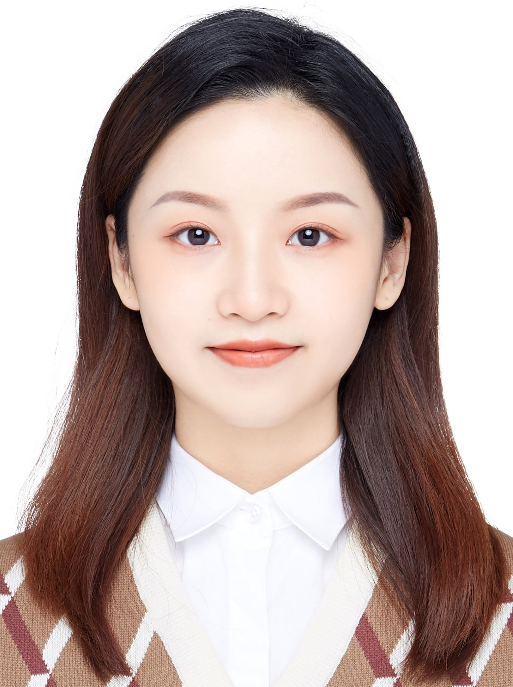

Lai Jiang 「姜来」
Master Student @ USC

Email: ljiang89@usc.edu
LinkedIn: https://www.linkedin.com/in/lai-jiang-512821189/


About Me
I'm a Research Assistant at Intelligent Vision Group (IVG), Tsinghua University, under the guidance of Prof. Jiwen Lu. I also worked at SenseTime Research as an intern now. In December 2020, I received B.S. degree in Computer Science and Mathematics at the University of Maryland. Before joined IVG, I did research at Perception and Robotics Group (PRG) in the Department of Computer Science, University of Maryland, under the guidance of Prof. Yiannis Aloimonos. My research interest is in Computer Vision, especially Generative Models and other interesting problems. I'll move to LA in January 2022 for Master degree.
Education
University of California, Los Angeles, CA, USA
- Master student
University of Maryland at College Park, MD, USA
- Bachelor of Science in Computer Science
- Bachelor of Science in Mathematics
- GPA: 3.7
Publications
Guangyi Chen, Tianpei Gu, Jiwen Lu, Jin-An Bao, and Jie Zhou
IEEE Transactions on Image Processing (TIP), 2021
[PDF] [Supp] [Code]
We propose attention pyramid networks by the "split-attend-merge-stack" principle to jointly learn the attentions under different scales and obtain superior performance on many person re-identification datasets.
Research Experience
Current Project
Diffusion Model for Generative Task
- Exploring the Diffusion Probabilistic Models.
Image Editting and Latent Space
- Exploring the latent space of GAN. Now researching on CLIP-based editing methods.
Music to Dance
- Generating 3D dance pose from input music.
Past Project
3-D Reconstruction
- Researching on state-of-art 3D Reconstruction method, especially reconstruct with SMPL model.
- Customized existing 3D construction methods to fit our dataset; maintained the human 3D reconstruction methods survey for the lab.
Person Re-identification
- Proposed a novel CNN-based network to re-identify person based on their movement style.
- Built an online and in-memory system to re-identify people with 85% accuracy under clean image setting.
- Propose to draw the counterfactual causality from the traditional trained "biased" network to infer the effect from bad bias, then remove them. Proposed a novel deep neural network for Person Re-ID task to make causal intervention in training and counterfactual reasoning in inference to remove the bad while keep the good features.
- Proposed an attention pyramid structure for Person Re-ID task to focus more on local attention of the feature map while keep the global attention of a human image. Our method outperforms the state-of-the-art methods by a large margin with -40% computational cost. The work has been submitted to TIP.
Field Experience
SenseTime Research
Computer Vision Research Intern- Build an end-to-end image generation pipeline with StyleGAN to produce massive high-quality stylized image with model blending.
- Main contributor of the product which transferring human face image into multiple style (now 10+).
- Develop a pipeline of “Inversion-Editing-Stylization” for human face, which the editing part can receive a certain attribute selection or a text prompt.
- Assisted to implement the project of music to dance generation
Beijing Photon Dance Tech Inc.
Co-Founder, Algorithm Engineer- Founded in Skywork Team, Tsinghua University.
- Proposed an end-to-end solution from extracted 3D point cloud with multiple views to automatic motion difference evaluating. Participated in multi-view point cloud calibration and developing of DL-based merging algorithm.
- Our team just receive the Pre-A Investment.
Professional Skills
Programming Language (ranked by proficiency): Python, Java, C, C++, Matlab, Git, Shell
Deep Learning Framework: Keras, PyTorch, TensorFlow